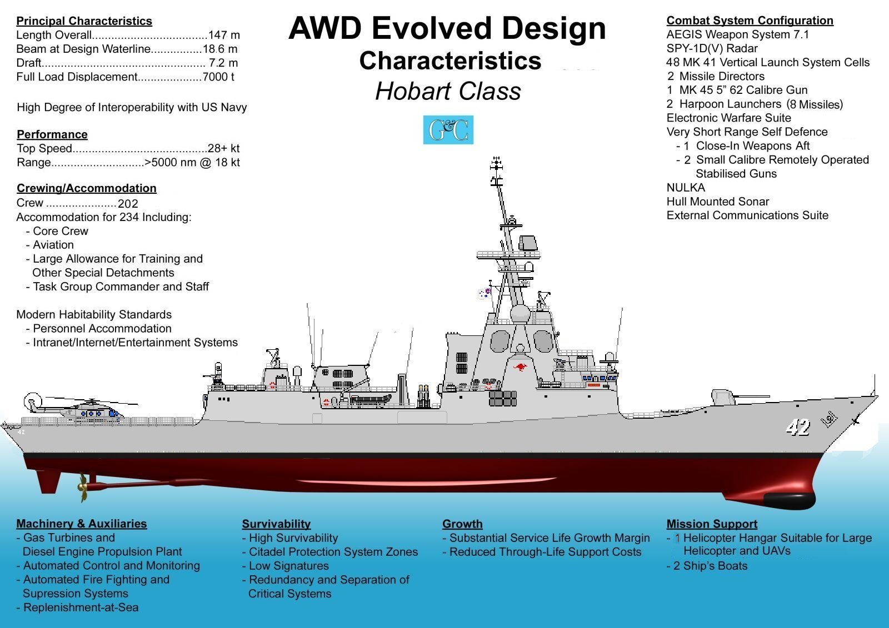
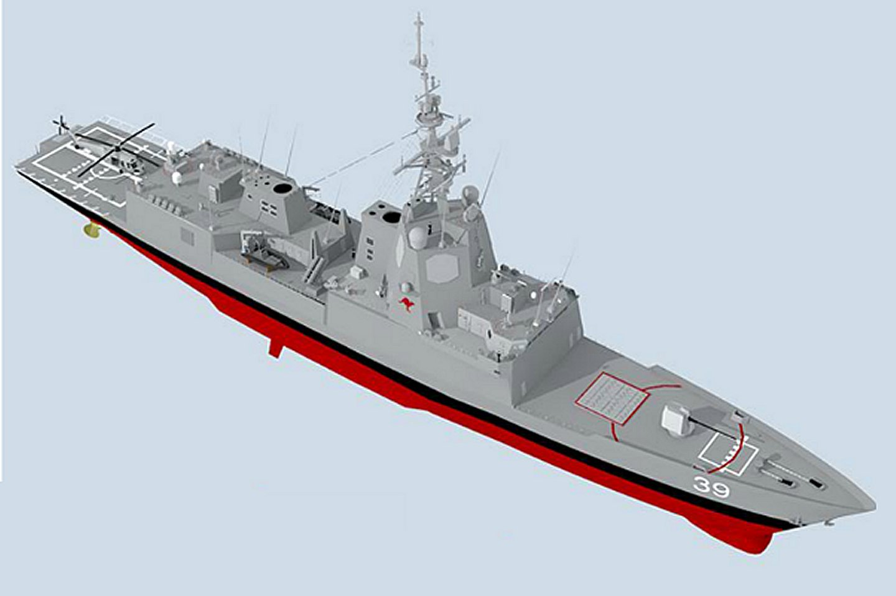

AUSTRALIAN HOBART CLASS DDG LAST UPDATE: September 3, 2015     
|
| SPECIFICATIONS | PHOTOGRAPHS (Click on the pictures for an enlarged photo) |
 Designation: DDG Length: 483 ft (147 m) Beam: 61 ft (18.6 m) Draft: 18 ft (5.2 m0 Full Load Displacement: 7,000 tons Propulsion (CODOG): - 2 x GE 7LM2500-SA-MLG38 turbines - 2 x Cat Bravo 16V engines - 2 x shafts Performance: - Top Speed: 28+ knots - Range: 5,000+ nautical miles at 18 knots Crew: 202 (includes 16 airwing) Accommodation: 234 Sensors/Electronics: - Aegis Weapon System Baseline 7.1 - AN/SPY-1D(V) Phased Array Radar - AN/SPQ-9B X-band pulse doppler horizon search radar - Link 11 and 16 tactical uplinks - ASTIS MCE SATCOM - Inmarsat - Raytheon Mark 99 fire-control System - 2500 electro-optical director - VAMPIR IR search and track system - Toplite stabilised target acquisition sights - 2 x CW radars for missile direction - 2 x L-3 X-band navigation radars Counter Measures (ECM): - EDO Recon & Surveillance Systems ES-3701 ESM radar - MBS-567A communications ESM system - Avalon multipurpose digital receiver - Jenkins Defence Systems low-band receiver - 4 x NULKA Active Missile Decoy launchers - 4 x 6 radio freq, infrared, & acoustic decoy launchers Sonar: - Multistatic Variable Depth Sonar System - Hull-mounted sonar - Quad directional active-passive array - High-powered towed sonar arrray Armament: - 48 Cell Mk 41 Vertical Launch System (ESSM, SM2) - 1 x Mk 45 5” 62 Calibre Gun - 2 x 4 Advanced HARPOON missiles - 1 x 20mm Phalanx CIWS - 2 x 30mm Bushmaster-Typhoon auto-cannons Aviation: - 1 x Hanger for - 1 x S-70 Seahawk & UAV Helos Boats: - 2 x Rigid Hull Inflatable Boats
Ships in Class: The first Australian AWD destroyer, HObart class ship, HMAS Hobart DDGH-39, was launched on May 23, 2015, and is expected to enter service in 2016. HMAS Brisbane DDGH-41 is due in September 2017, and HMAS Sydney DDGH-42 by March 2019. The Hobart class AEGIS destroyers are a class of three air warfare destroyers (AWDs) for the Royal Australian Navy (RAN). Planning for a class to replace the Adelaide class frigates and restore the a world-class anti-air capability, as well as strong multi-mission capabilities in ASW and ASuW, began by 2000 under acquisition project SEA 4000. Although the designation "Air Warfare Destroyer" implies ships dedicated to the defence of a naval force or assets ashore from aircraft and missile attack, as stated, the planned Australian destroyers will also be able to operate in anti-surface, anti-submarine, and naval gunfire support roles.
BUILDING HISTORY: Once the design was finalized, construction started in 2007 at ASC's shipyard in Osborne, South Australia from 31 pre-fabricated "blocks" In June, 2007, NQEA advised the AWD Alliance that the shipbuilder was undergoing restructuring and may have difficulty in meeting its contracted obligations. After negotiations with NQEA and BAE Systems Australia, the Australian gveernment transferred all of NQEA's work to BAE Australia. This led the AWD Alliance and the Australian government to announce that the issue was going to result in a 12 to 18 month delay. However, there were then issues with BAE Australia, who was also heavily involved with building the Canberra class LHDs. This led to the AWD Alliance and Australian governmnt announcing a plan to reduce the workload on BAE by redistributing some of the 13 of the 24 hull blocks that BAE was lated to build to other shipyards. Three blocks containing each destroyer's hull-mounted sonar would be assembled by Navantia in Spain and the United Kingdom, with the possibility of another two hull blocks being assigned to the Spanish shipyard. In September 2012, an additional 9 month delay was announced. The Australian government announced this as an intended method to create a better transition of labour from the three destroyers to upcoming, follow-on projects like the Collins submarine replacement, and the replacements for the Anzac-class frigates, and also to achieve savings in the federal budget. As stated, in May 2015, the 1st in class, HMAS Hobart, DDGH-39, was alunched. The others will follow at approximate 18 month intervals.
CHARACTERISTICS: The standard ship's company is 186-strong, plus 16 air-wing personnel to operate and maintain the ship's helicopter. However, there is a total accommodation aboard for 31 officers and 203 sailors total, or a total of 234.
WEAPONS AND AIRCRAFT: The missiles are supplemented by two four-canister launchers for Harpoon anti-ship missiles, and a BAE Systems Mark 45 Mod 4, 5-inch gun with a 62-calibre barrel. The 5-inch gun has a maximum range of 14.7 miles with normal projectiles, but will be capable of firing extended range munitions in support of land forces. Two Babcock Mark 32 Mod 9 two-tube torpedo launchers will be carried, and used to fire Eurotorp MU90 torpedoes for close-in ASW operations. For close-in defence, the ships will carry an aft-facing Phalanx 20mm CIWS system, plus two M242 Bushmaster autocannons in Typhoon mounts sited on the bridge wings. The Hobarts will each initially carry a single S-70B-2 Seahawk helicopter. The helicopter will be replaced by the MH-60 Romeo version of the Seahawk once it enters RAN service. Two rigid-hulled inflatable boats are also carried.
Sensors/Electroince.Countrermeasures: In addition to the AEGIS system, the Hobarts will be fitted with a Northrop Grumman AN/SPQ-9B X-band pulse Doppler horizon search radar, a Raytheon Mark 99 fire-control system with two continuous wave illuminating radars for missile direction, and two L-3 Communications SAM Electronics X-band navigation radars. The ships are fitted with a Ultra Electronics Maritime Systems' Modular Multistatic Variable Depth Sonar System, which included a hull-mounted sonar, a quad directional active-passive receive array, a passive torpedo detection array, and a high-powered towed sonar source. Other sensors include an Ultra Electronics Series 2500 electro-optical director, a Sagem VAMPIR IR search and track system, and Rafael Toplite stabilised target acquisition sights for each ship's Typhoons. Electronic warfare sensors consist of the ITT EDO Reconnaissance and Surveillance Systems ES-3701 electronic support measures (ESM) radar, a SwRI MBS-567A communications ESM system, an Ultra Electronics Avalon Systems multipurpose digital receiver, and a Jenkins Engineering Defence Systems low-band receiver.[3] Countermeasures include four launchers for Nulka decoy missiles, plus four six-tube launchers for radio frequency, infrared, and underwater acoustic decoys.
Communications equipment includes HF, VHF, and UHF radios, Link 11 and Link 16 tactical data exchange uplinks, ASTIS MCE (Advanced SATCOM Terrestrial Infrastructure System Maritime Communications Elements) terminals, and Inmarsat equipment.
Propulsion/Power: For in-harbour manuevering, each destroyer is fitted with a bow thruster. Onboard electricity requirements are supplied by four MTU prime mover diesel motors connected to Alconza alternators. The ships' maximum speed is 28+ knots, with a range of 5,000+ nautical miles at 18 knots; although not fast enough to keep pace with an American Carrier Strike Group at full speed, the speed is more than sufficient to escport the RAN's two Canberra Class LPH vessels and other critical RAN capitol ships. |
            |


|
Jeff Head is a member of the US Naval Insitute who has many years experience in the power, defense, and computer industries. He currently works for the federal government helping maintain regional infrastructure. He is the author of a self-published military techno-thriller called, "Dragon's Fury," that projects a fictional third world war arising out of current events. Learn more about that series by clicking on the picture of the novel cover below:
 DRAGON'S FURY-World War against America and the West |
JEFFHEAD.COM Hit Counter

Jeff Head's Naval Sites Hit Counter